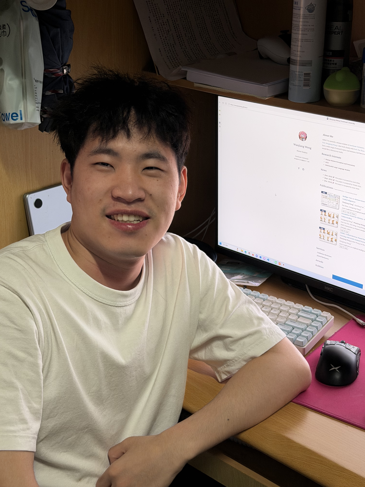
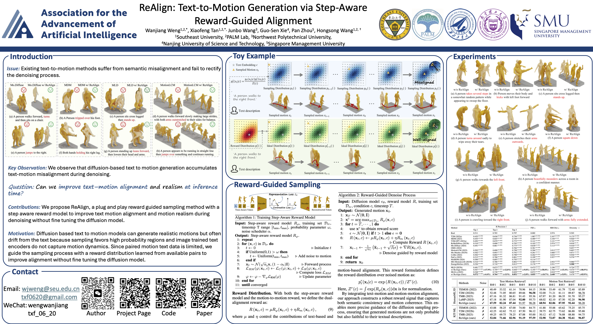
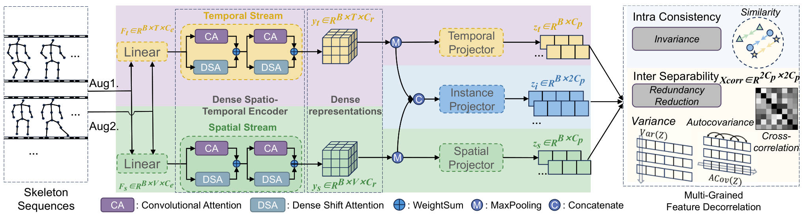
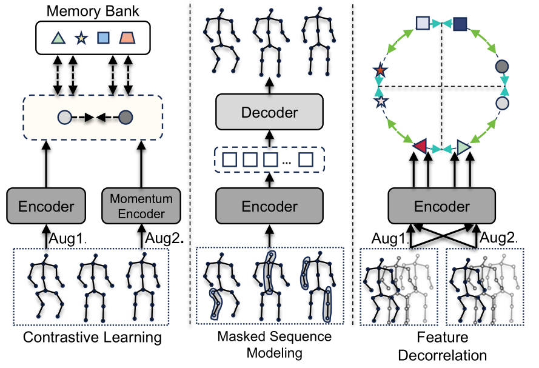

Hello! I’m currently a Master student at Southeast University, where I’m fortunate to be supervised by Prof. Hongsong Wang. I also work closely with Prof. Pan Zhou at Singapore Management University. I have a wide range of research topics and interests, feel free to contact me if you have any questions or would like to discuss my works.

AAAI
TPAMI
AAAI